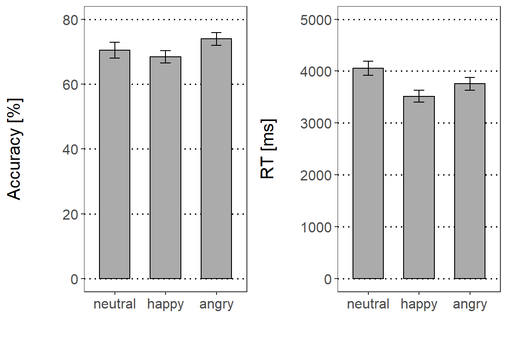
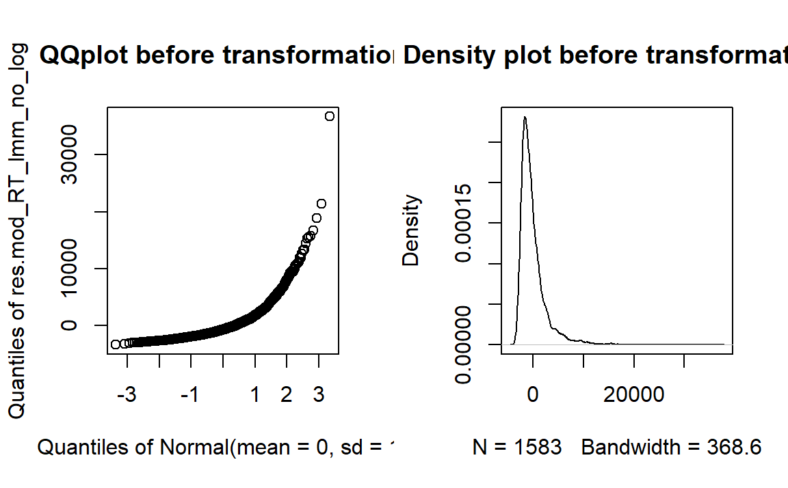
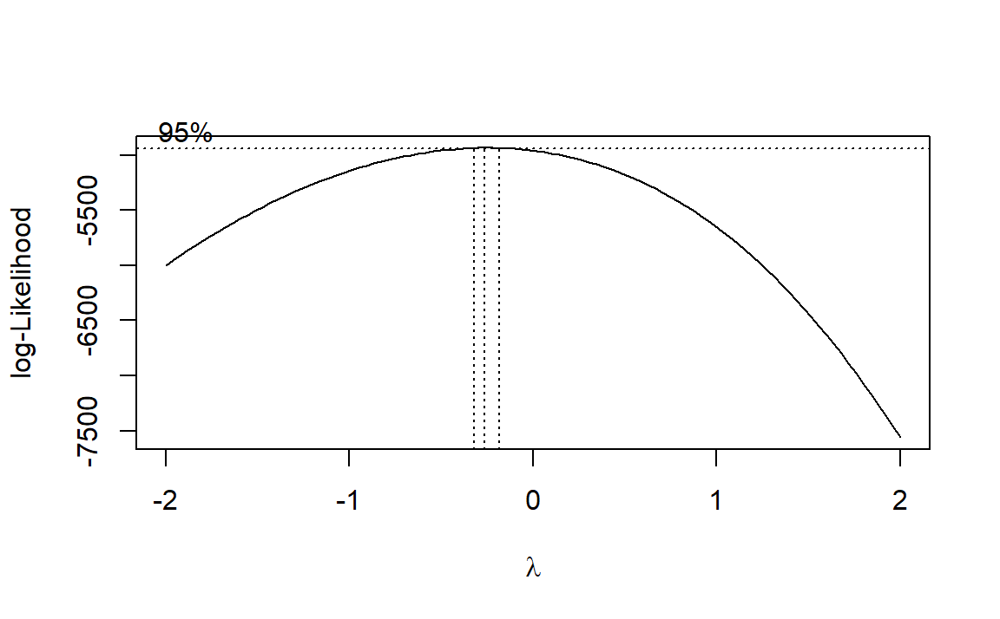

Emotion Matching Task (EMT)
We employed an emotion matching task (EMT) to assess children’s emotion knowledge. Children saw two faces with the same identity but different facial expression. Both faces were presented at the same time. While the faces were on screen, the children heard an audio lay-over of one of the emotion words (happy, angry or neutral). The children had to indicate with a button press which face matched the audio lay-over. We measured reaction times and accuracy.
We excluded:
- Reaction times < 250 ms or > 7s
- Incorrect responses
For the EMT we included a treatment contrast for facial expressions (emotional [average of happy/angry] vs. neutral faces (Emo_Neu), happy vs. angry faces (Hap_Ang)) as fixed factor. We calculated a GLMM for accuracy rates and an LMM for RTs. Working memory (WM_scal) was entered as a scaled covariate in all (G)LMM analyses to control for cognitive task demands.
The random effects structure included random intercepts for participants ((1|ID)) and stimulus ((1|Stim_Type)). Assumptions for multiple regression were checked for all models (normality of the residuals, linearity, multicollinearity, homoscedasticity).
We expected the highest accuracy rates for happy faces and fastest reaction times for pairings where happy faces were involved.
Descriptives
Accuracy rates (left side) and reaction times (right side) of the emotion matching task (EMT). Error bars indicate standard errors (SE).
# Select RT inspected criteria / correct trials
EMT_Acc_Plot = subset(EMT, Answer == 1 & Exclude_smaller_250ms == FALSE)
# Create factor, define neutral as baseline
EMT_Acc_Plot$emotion = factor(EMT_Acc_Plot$emotion, levels = c("neutral", "happy",
"angry"))
# Get accuracy for novel and repeated condition
acc_all = data.frame(xtabs(~ID + emotion, EMT_Acc_Plot))
# Recode to accuracy in percent
acc_all$Freq = (acc_all$Freq/24) * 100
# Calculate descriptives on accuracy
stats_acc_all = summarySEwithin(acc_all, measurevar = "Freq", withinvars = c("emotion"),
idvar = "ID")
# Plot accuracy
EMT_Acc_bar = ggplot(stats_acc_all, aes(x = emotion, y = Freq, fill = emotion)) +
geom_bar(position = position_dodge(), stat = "identity", colour = "black", size = 0.4,
width = 0.6) + geom_errorbar(aes(ymin = Freq - se, ymax = Freq + se), size = 0.4,
width = 0.2, position = position_dodge(0.9)) + labs(x = "", y = "Accuracy [%]") +
coord_cartesian(ylim = c(0, 80)) + scale_y_continuous(breaks = seq(0, 100, 20)) +
scale_fill_manual(values = c("#ababab", "#ababab", "#ababab")) + theme_bw() +
theme_SN
# Only examine clean data / correct responses
EMT_RT_Plot = subset(EMT, Exclude_smaller_250ms == FALSE & Answer == 1)
# Create factor, define neutral as baseline
EMT_RT_Plot$emotion = factor(EMT_RT_Plot$emotion, levels = c("neutral", "happy",
"angry"))
# Get accuracy for novel and repeated condition
RT_all = aggregate(EMT_RT_Plot$RT_in_ms, list(ID = EMT_RT_Plot$ID, emotion = EMT_RT_Plot$emotion),
mean)
# Set ID as factor
RT_all$ID = as.factor(RT_all$ID)
# Calculate descriptives on RT
stats_RT_all = summarySEwithin(RT_all, measurevar = "x", withinvars = c("emotion"),
idvar = "ID")
# Plot RTs
EMT_RT_bar = ggplot(stats_RT_all, aes(x = emotion, y = x, fill = emotion)) + geom_bar(position = position_dodge(),
stat = "identity", colour = "black", size = 0.4, width = 0.6) + geom_errorbar(aes(ymin = x -
se, ymax = x + se), size = 0.4, width = 0.2, position = position_dodge(0.9)) +
labs(x = "", y = "RT [ms]") + coord_cartesian(ylim = c(0, 5000)) + scale_y_continuous(breaks = seq(0,
5000, 1000)) + scale_fill_manual(values = c("#ababab", "#ababab", "#ababab")) +
theme_bw() + theme_SN
# Combine plots
fig_EMT = cowplot::plot_grid(EMT_Acc_bar, EMT_RT_bar, align = "vh", hjust = -1, nrow = 1)
fig_EMT
Model specification
GLMM: Random effect structure
We fitted single-trial data to the following model:
# RT cleaning criteria
EMT_Acc = subset(EMT, Exclude_smaller_250ms == FALSE)
# Factor random effects
EMT_Acc$ID = as.factor(EMT_Acc$ID)
EMT_Acc$Stim_Type = as.factor(EMT_Acc$Stim_Type)
# Create factor, define neutral as baseline
EMT_Acc$emotion = factor(EMT_Acc$emotion)
contrasts(EMT_Acc$emotion) = contr.treatment(3, base = 3)
# A = angry, N = neutral, H = happy
HvsA = c(0.5, -0.5, 0) # compare: happy vs. angry
EvsN = c(-0.25, -0.25, 0.5) # compare happy/angry to neutral
contrasts(EMT_Acc$emotion) = cbind(EvsN, HvsA)
mod_EMT_Acc.glmm = glmer(Answer ~ emotion + scale(WM) + (1 | ID) + (1 | Stim_Type),
data = EMT_Acc, control = glmerControl(calc.derivs = FALSE), family = binomial)Answer ~ emotion + scale(WM) + (1 | ID) + (1 | Stim_Type)
GLMM: Overdispersion
If the p-value is < 0.05, data would be overdispersed. Here p > 0.05. Hence, overdispersion is not a problem.
# Assumption check: Appropriate estimation of variance
overdisp_fun(mod_EMT_Acc.glmm) chisq ratio rdf p
1736.32 0.87 1992.00 1.00 LMM: Random effect structure
We fitted single-trial data to the following model:
# RT criteria / correct responses
EMT_RT = subset(EMT, Answer == 1 & Exclude_smaller_250ms == FALSE)
# Factor random effects
EMT_RT$ID = as.factor(EMT_RT$ID)
EMT_RT$Stim_Type = as.factor(EMT_RT$Stim_Type)
# Create factor, define neutral as baseline
EMT_RT$emotion = factor(EMT_RT$emotion)
contrasts(EMT_RT$emotion) = contr.treatment(3, base = 3)
# A = angry, N = neutral, H = happy
HvsA = c(0.5, -0.5, 0) # compare: happy vs. angry
EvsN = c(-0.25, -0.25, 0.5) # compare happy/angry to neutral
contrasts(EMT_RT$emotion) = cbind(EvsN, HvsA)
# Build model
mod_EMT_RT.lmer = lmer(log(RT_in_ms) ~ emotion + scale(WM) + (1 | ID) + (1 | Stim_Type),
data = EMT_RT, control = lmerControl(calc.derivs = FALSE))
tab_model(mod_EMT_RT.lmer)log(RT_in_ms) ~ emotion + scale(WM) + (1 | ID) + (1 | Stim_Type)
LMM: Normality of residuals
RTs were log-transformed (determined using the Box-Cox procedure) to meet the assumption of normally distributed residuals.
# Visualize normality assumption of residuals (without log transform)
mod_RT_lmm_no_log = lm(RT_in_ms ~ emotion, data = EMT_RT)
res.mod_RT_lmm_no_log = residuals(mod_RT_lmm_no_log)
par(mfrow = c(1, 2))
qqpl_RT_lmm_no_log = qqPlot(res.mod_RT_lmm_no_log, main = "QQplot before transformation")
norm_RT_lmm_no_log = plot(density(res.mod_RT_lmm_no_log), main = "Density plot before transformation")
par(mfrow = c(1, 1))
# Check which transformation of DV is suitable
# Calculate box-cox plot
mod_RT_targ = lm(RT_in_ms ~ emotion, data = EMT_RT)
boxcox(mod_RT_targ)
# Visualize normality assumption of residuals (with log transform)
mod_RT_lmm_log = lm(log(RT_in_ms) ~ emotion, data = EMT_RT)
res.mod_RT_lmm_log = residuals(mod_RT_lmm_log)
par(mfrow = c(1, 2))
qqpl_RT_lmm_log = qqPlot(res.mod_RT_lmm_log, main = "QQplot after transformation")
norm_RT_lmm_log = plot(density(res.mod_RT_lmm_log), main = "Density plot after transformation")par(mfrow = c(1, 1))LMM: Homoscedasticity
# Check homoscedasticity
plot(fitted(mod_EMT_RT.lmer), residuals(mod_EMT_RT.lmer))
abline(0, 0)
Results
# Calculate post-hoc tests
mod_EMT_RT.lmer2 = lmer(log(RT_in_ms) ~ emotion + scale(WM) + (1 | ID) + (1 | Stim_Type),
data = EMT_RT, control = lmerControl(calc.derivs = FALSE))
# Choose contrasts of interest / add fdr-correction
EMT_RT_posthoc = summary(glht(mod_EMT_RT.lmer2, linfct = mcp(emotion = c("angry - neutral = 0",
"happy - neutral = 0")), test = adjusted(type = "fdr")))
# Get ready for presentation in RMarkdown
tab1 = merge(as.data.frame(EMT_RT_posthoc$test$coefficients), as.data.frame(EMT_RT_posthoc$test$sigma),
by = 0)
tab2 = as.data.frame(EMT_RT_posthoc$test$pvalues)
rownames(tab2) = rownames(as.data.frame(EMT_RT_posthoc$test$tstat))
tab2 = merge(as.data.frame(EMT_RT_posthoc$test$tstat), tab2, by = 0)
EMT_RT_posthoc = merge(tab1, tab2, by = "Row.names")
colnames(EMT_RT_posthoc) = c("Contrast", "Est.", "Std. Error", "z value", "p value")There were no accuracy differences between emotional vs. neutral expressions (\(\beta\) = 0.10, p = 0.62, OR = 1.10 [95% CI: -0.71, 2.92]), nor happy vs. angry expressions (\(\beta\) = 0.33, p = 0.05, OR = 1.39 [95% CI: -0.90, 3.69]). For reaction times, the emotional vs. neutral expression contrast was significant (\(\beta\) = 0.11, p = 0.01). Post-hoc tests indicated that happy expressions were detected faster than neutral expressions(p = 0.01; angry vs neutral: p = 0.18). The happy vs. angry contrast yielded no significant results (\(\beta\) = 0.05, p = 0.19).
# Define labels
labels = c("Emotional vs. Neutral", "Happy vs. Angry", "Working Memory")
# Show results
tab_model(mod_EMT_Acc.glmm, mod_EMT_RT.lmer, pred.labels = labels, show.ci = FALSE,
show.se = TRUE, string.se = "SE", show.stat = TRUE, string.stat = "t", show.re.var = TRUE,
show.obs = FALSE, show.intercept = FALSE, emph.p = TRUE, dv.labels = c("Accuracy",
"Reaction time"), show.icc = TRUE)| Accuracy | Reaction time | |||||||
|---|---|---|---|---|---|---|---|---|
| Predictors | Odds Ratios | SE | t | p | Estimates | SE | t | p |
| Emotional vs. Neutral | 1.10 | 0.22 | 0.50 | 0.619 | 0.11 | 0.04 | 2.58 | 0.010 |
| Happy vs. Angry | 1.39 | 0.24 | 1.92 | 0.055 | 0.05 | 0.04 | 1.31 | 0.190 |
| Working Memory | 1.25 | 0.26 | 1.10 | 0.272 | 0.05 | 0.06 | 0.78 | 0.436 |
| Random Effects | ||||||||
| σ2 | 3.29 | 0.24 | ||||||
| τ00 | 1.08 Stim_Type | 0.00 Stim_Type | ||||||
| 1.07 ID | 0.10 ID | |||||||
| ICC | 0.40 | 0.30 | ||||||
| N | 28 ID | 28 ID | ||||||
| 59 Stim_Type | 59 Stim_Type | |||||||
| Marginal R2 / Conditional R2 | 0.013 / 0.403 | 0.011 / 0.312 | ||||||
Note: p-values for the fixed effects calculated using Wald-statistics approximation, uncorrected. SE: standard error; t: test statistic coefficient; p: p-value; σ2: within-group variance; τ00: between-group variance; ICC: interclass correlation (ratio of between-cluster variance to total variance); N: number of random effects.
Post-hoc tests: Reaction time contrast emotional vs. neutral:
# Create table
kable(EMT_RT_posthoc) %>%
kable_styling(bootstrap_options = c("hover"), font_size = 14, fixed_thead = T)| Contrast | Est. | Std. Error | z value | p value |
|---|---|---|---|---|
| angry - neutral | -0.06 | 0.04 | -1.6 | 0.18 |
| happy - neutral | -0.10 | 0.04 | -2.9 | 0.01 |
ERP association with empathy / emotion knowledge
## Re-do this section for accuracy data --> use ERPs dataset for accuracy
## calculation
## Select data
load.Rdata(filename = "./data/ERP_data.Rdata", "ERP_data")
ERPs_sel = subset(ERP_data, Exclude_smaller_250ms == FALSE & Response == 1)
# Face 2: P1 repeated happy
ERP_hap_Face2_rep = subset(ERPs_sel, Condition == 4)
Corr_data = data.frame(tapply(ERP_hap_Face2_rep$mean_ROI_P1, ERP_hap_Face2_rep$ID,
mean))
names(Corr_data)[1] = "P1_hap_rep"
# Face 2: P1 novel happy
ERP_hap_Face2_nov = subset(ERPs_sel, Condition == 7)
Corr_data$P1_hap_nov = tapply(ERP_hap_Face2_nov$mean_ROI_P1, ERP_hap_Face2_nov$ID,
mean)
# Face 2: P1 novel angry
ERP_ang_Face2_nov = subset(ERPs_sel, Condition == 9)
Corr_data$P1_ang_nov = tapply(ERP_ang_Face2_nov$mean_ROI_P1, ERP_ang_Face2_nov$ID,
mean)
Corr_data = Corr_data[-c(4), ]
# EMT
# Calculate difference scores
Corr_data$P1_F2_Nov_Rep_Hap = Corr_data$P1_hap_nov - Corr_data$P1_hap_rep
Corr_data$P1_F2_Nov_Hap_Ang = Corr_data$P1_hap_nov - Corr_data$P1_ang_nov
# Order questionnaire data by ID
qn_data = qn_data[order(qn_data$ID), ]
# Integrate questionnare data
Corr_data$EMK_EK_P = qn_data$EMK_EK_P
Corr_data$EMK_EM_P = qn_data$EMK_EM_P
Corr_data$EMK_EK_Ch = qn_data$EMK_EK_Ch
Corr_data$EMK_EM_Ch = qn_data$EMK_EM_Ch
# Compute composite scores for parental/children measures of EMK
Corr_data$EMK_EK = scale(Corr_data$EMK_EK_P) + scale(Corr_data$EMK_EK_Ch)
Corr_data$EMK_EM = scale(Corr_data$EMK_EM_P) + scale(Corr_data$EMK_EM_Ch)
# Select variables
ERPs_corr_F2 = subset(Corr_data, select = c(P1_F2_Nov_Rep_Hap, P1_F2_Nov_Hap_Ang,
EMK_EK_P, EMK_EK_Ch, EMK_EM_P, EMK_EM_Ch))Correlation of EMK empathy composite scores with significant P1 amplitude repetition x emotion interactions
# Calculate EMK Empathy associations with significant P1 repetition x emotion
# interaction
EMK_EM_Nov_Hap_Rep_Hap = cor.test(Corr_data$P1_F2_Nov_Rep_Hap, Corr_data$EMK_EM)
EMK_EM_Nov_Hap_Nov_Ang = cor.test(Corr_data$P1_F2_Nov_Hap_Ang, Corr_data$EMK_EM)
# Merge table
P1_Corr_Nov_Hap_Rep_Hap = c(EMK_EM_Nov_Hap_Rep_Hap$estimate[[1]], EMK_EM_Nov_Hap_Rep_Hap$conf.int[1],
EMK_EM_Nov_Hap_Rep_Hap$conf.int[2], EMK_EM_Nov_Hap_Rep_Hap$statistic[[1]], EMK_EM_Nov_Hap_Rep_Hap$p.value)
P1_Corr_Nov_Hap_Nov_Ang = c(EMK_EM_Nov_Hap_Nov_Ang$estimate[[1]], EMK_EM_Nov_Hap_Nov_Ang$conf.int[1],
EMK_EM_Nov_Hap_Nov_Ang$conf.int[2], EMK_EM_Nov_Hap_Nov_Ang$statistic[[1]], EMK_EM_Nov_Hap_Nov_Ang$p.value)
EMK_EM_table = as.data.frame(rbind(P1_Corr_Nov_Hap_Rep_Hap, P1_Corr_Nov_Hap_Nov_Ang))
# Rename columns
names(EMK_EM_table)[1] = "r"
names(EMK_EM_table)[2] = "Upper CI"
names(EMK_EM_table)[3] = "Lower CI"
names(EMK_EM_table)[4] = "t"
names(EMK_EM_table)[5] = "p (uncorrected)"
# Print table
kable(EMK_EM_table) %>%
kable_styling(bootstrap_options = c("striped", "hover", "condensed", "responsive"))| r | Upper CI | Lower CI | t | p (uncorrected) | |
|---|---|---|---|---|---|
| P1_Corr_Nov_Hap_Rep_Hap | -0.09 | -0.43 | 0.27 | -0.49 | 0.63 |
| P1_Corr_Nov_Hap_Nov_Ang | -0.06 | -0.40 | 0.30 | -0.30 | 0.76 |
# For supplement: mean / SD mean(Corr_data$EMK_EM) SD(Corr_data$EMK_EM)
# mean(Corr_data$EMK_EK) SD(Corr_data$EMK_EK)
# mean(Corr_data$P1_F2_Nov_Rep_Hap, na.rm = TRUE) SD(Corr_data$P1_F2_Nov_Rep_Hap)
# mean(Corr_data$P1_F2_Nov_Hap_Ang, na.rm = TRUE) SD(Corr_data$P1_F2_Nov_Hap_Ang)Correlation of EMK emotion knowledge composite scores with significant P1 amplitude repetition x emotion interactions
# Calculate EMK Empathy associations with significant P1 repetition x emotion
# interaction
EMK_EK_Nov_Hap_Rep_Hap = cor.test(Corr_data$P1_F2_Nov_Rep_Hap, Corr_data$EMK_EK)
EMK_EK_Nov_Hap_Nov_Ang = cor.test(Corr_data$P1_F2_Nov_Hap_Ang, Corr_data$EMK_EK)
# Merge table
P1_Corr_Nov_Hap_Rep_Hap = c(EMK_EK_Nov_Hap_Rep_Hap$estimate[[1]], EMK_EK_Nov_Hap_Rep_Hap$conf.int[1],
EMK_EK_Nov_Hap_Rep_Hap$conf.int[2], EMK_EK_Nov_Hap_Rep_Hap$statistic[[1]], EMK_EK_Nov_Hap_Rep_Hap$p.value)
P1_Corr_Nov_Hap_Nov_Ang = c(EMK_EK_Nov_Hap_Nov_Ang$estimate[[1]], EMK_EK_Nov_Hap_Nov_Ang$conf.int[1],
EMK_EK_Nov_Hap_Nov_Ang$conf.int[2], EMK_EK_Nov_Hap_Nov_Ang$statistic[[1]], EMK_EK_Nov_Hap_Nov_Ang$p.value)
EMK_EK_table = as.data.frame(rbind(P1_Corr_Nov_Hap_Rep_Hap, P1_Corr_Nov_Hap_Nov_Ang))
# Rename columns
names(EMK_EK_table)[1] = "r"
names(EMK_EK_table)[2] = "Upper CI"
names(EMK_EK_table)[3] = "Lower CI"
names(EMK_EK_table)[4] = "t"
names(EMK_EK_table)[5] = "p (uncorrected)"
# Print table
kable(EMK_EK_table) %>%
kable_styling(bootstrap_options = c("striped", "hover", "condensed", "responsive"))| r | Upper CI | Lower CI | t | p (uncorrected) | |
|---|---|---|---|---|---|
| P1_Corr_Nov_Hap_Rep_Hap | 0.06 | -0.30 | 0.41 | 0.34 | 0.74 |
| P1_Corr_Nov_Hap_Nov_Ang | 0.07 | -0.29 | 0.41 | 0.38 | 0.71 |
We calculated difference scores of significant emotion x repetition interactions (novel happy-repeated happy, novel happy-novel angry) for P1 amplitudes. Subsequently, we associated them with EMK 3-6 empathy and emotion knowledge composite scores. None of the correlations of emotion knowledge or empathy with P1 difference scores survived FDR-correction (all p > .63)
Session info
# Get session info
sessionInfo()R version 4.0.2 (2020-06-22)
Platform: x86_64-w64-mingw32/x64 (64-bit)
Running under: Windows 10 x64 (build 18362)
Matrix products: default
locale:
[1] LC_COLLATE=German_Germany.1252 LC_CTYPE=German_Germany.1252
[3] LC_MONETARY=German_Germany.1252 LC_NUMERIC=C
[5] LC_TIME=German_Germany.1252
attached base packages:
[1] grid stats graphics grDevices utils datasets methods
[8] base
other attached packages:
[1] table1_1.3 pander_0.6.3 knitr_1.32 gridGraphics_0.5-1
[5] ggpubr_0.4.0 corrplot_0.84 apaTables_2.0.8 gvlma_1.0.0.3
[9] eegUtils_0.5.0 forcats_0.5.1 stringr_1.4.0 purrr_0.3.4
[13] readr_1.4.0 tidyr_1.1.3 tibble_3.1.1 tidyverse_1.3.1
[17] sjlabelled_1.1.7 sjmisc_2.8.6 sjPlot_2.8.7 Rmisc_1.5
[21] plyr_1.8.6 reshape2_1.4.4 psych_2.1.3 multcomp_1.4-16
[25] TH.data_1.0-10 mvtnorm_1.1-1 MASS_7.3-53.1 lmerTest_3.1-3
[29] lme4_1.1-26 Matrix_1.3-2 Hmisc_4.5-0 Formula_1.2-4
[33] survival_3.2-10 lattice_0.20-41 ggstatsplot_0.7.2 ez_4.4-0
[37] EnvStats_2.4.0 eeptools_1.2.4 ggplot2_3.3.3 dplyr_1.0.5
[41] cowplot_1.1.1 summarytools_0.9.9 miceadds_3.11-6 mice_3.13.0
[45] rmdformats_1.0.2 XLConnect_1.0.3 kableExtra_1.3.4
loaded via a namespace (and not attached):
[1] estimability_1.3 R.methodsS3_1.8.1 coda_0.19-4
[4] R.utils_2.10.1 data.table_1.14.0 rpart_4.1-15
[7] generics_0.1.0 future_1.21.0 correlation_0.6.1
[10] webshot_0.5.2 xml2_1.3.2 lubridate_1.7.10
[13] httpuv_1.5.5 assertthat_0.2.1 viridis_0.6.0
[16] WRS2_1.1-1 xfun_0.22 hms_1.0.0
[19] jquerylib_0.1.3 rJava_0.9-13 evaluate_0.14
[22] promises_1.2.0.1 fansi_0.4.2 dbplyr_2.1.1
[25] readxl_1.3.1 DBI_1.1.1 tmvnsim_1.0-2
[28] htmlwidgets_1.5.3 reshape_0.8.8 kSamples_1.2-9
[31] Rmpfr_0.8-4 paletteer_1.3.0 ellipsis_0.3.1
[34] backports_1.2.1 signal_0.7-6 bookdown_0.21
[37] insight_0.13.2 ggcorrplot_0.1.3 rapportools_1.0
[40] vctrs_0.3.7 abind_1.4-5 cachem_1.0.4
[43] withr_2.4.2 pryr_0.1.4 checkmate_2.0.0
[46] emmeans_1.5.5-1 vcd_1.4-8 mnormt_2.0.2
[49] svglite_2.0.0 cluster_2.1.2 lazyeval_0.2.2
[52] crayon_1.4.1 labeling_0.4.2 pkgconfig_2.0.3
[55] SuppDists_1.1-9.5 nlme_3.1-152 statsExpressions_1.0.1
[58] nnet_7.3-15 rlang_0.4.10 globals_0.14.0
[61] lifecycle_1.0.0 miniUI_0.1.1.1 MatrixModels_0.5-0
[64] sandwich_3.0-0 modelr_0.1.8 cellranger_1.1.0
[67] tcltk_4.0.2 matrixStats_0.58.0 lmtest_0.9-38
[70] mc2d_0.1-19 carData_3.0-4 boot_1.3-27
[73] zoo_1.8-9 reprex_2.0.0 base64enc_0.1-3
[ reached getOption("max.print") -- omitted 95 entries ]